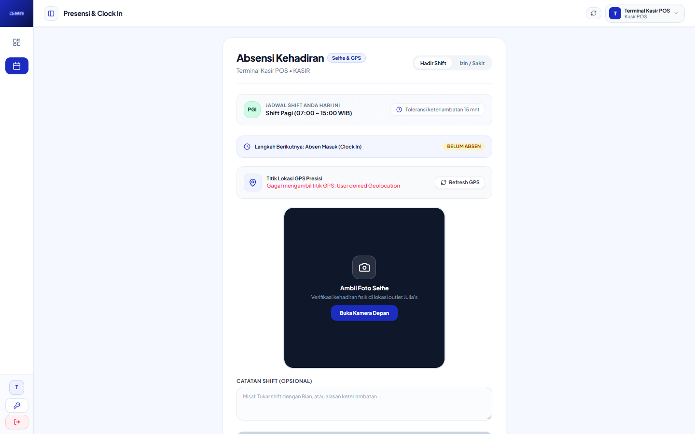
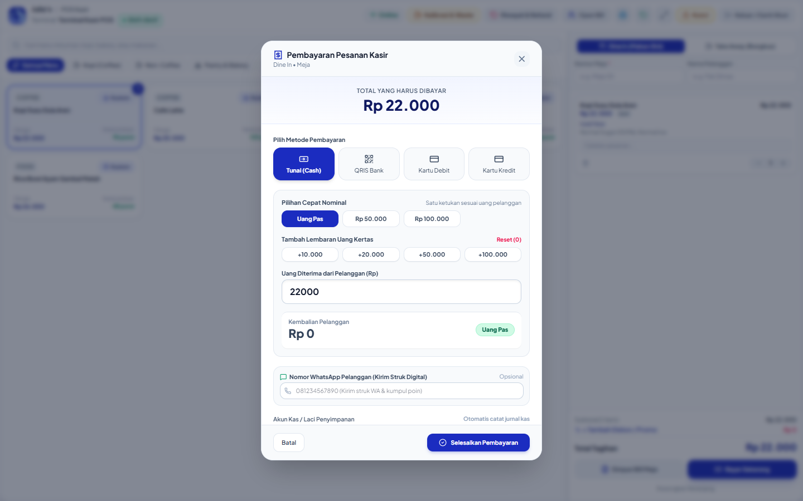
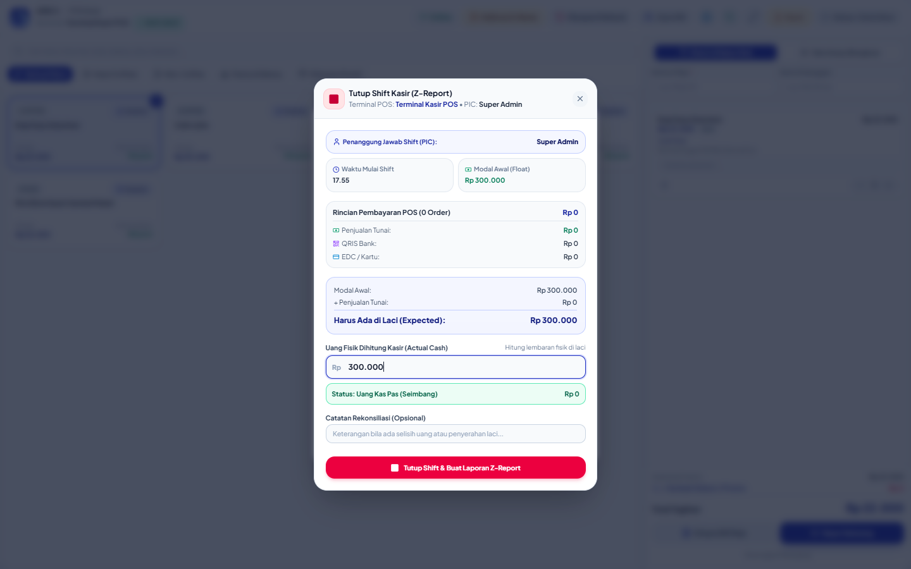
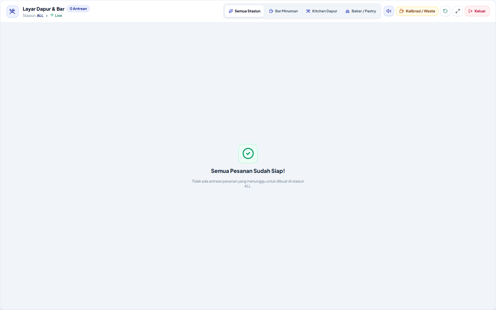

Sistem Manajemen Toko & POS Kasir — Julia's Coffee
Buku panduan operasional frontliner untuk staf Kasir (KASIR),
Barista (BAR), Kitchen, dan Baker.
Memuat tata cara presensi selfie, pembukaan laci kasir, penerimaan pesanan & modifier,
pembayaran tunai & QRIS, otorisasi PIN Manager, hingga penutupan shift dan rekonsiliasi kas.
Peran Pengguna:
Kasir, Barista, Kitchen, Shift Leader
Versi Dokumen:
Rev 1.0 (November 2026)
Perangkat Kerja:
Tablet POS 10", Monitor KDS Bar, Smartphone Staf
Sifat Dokumen:
Wajib Dipahami Sebelum Bertugas Mandiri
☕ Bab 1: Siklus Harian Operasional Toko
Setiap staf operasional frontliner wajib menjalankan 5 tahap alur kerja harian berikut secara tertib:
Jadwal & Pembagian Tugas Shift:
Shift 1 (Pagi / Opening): Wajib tiba 30 menit sebelum toko buka untuk kalibrasi mesin espresso, cek persediaan susu & es, dan input modal awal kasir.
Shift 2 (Siang / Mid): Serah terima kas tengah hari (opsional) dan fokus kelancaran layanan di jam ramai (*rush hour*).
Shift 3 (Malam / Closing): Tutup transaksi kasir, cetak laporan shift, setoran uang ke amplop brankas, dan deep-cleaning mesin bar.
📸 Bab 2: Presensi Selfie & Dasbor Karyawan
1
Cara Melakukan Presensi Masuk (Clock In)
Buka menu Presensi & Clock In pada layar navigasi atau klik tombol Clock In di pojok atas.
Izinkan akses kamera dan lokasi browser (GPS).
Pastikan wajah terlihat jelas di dalam lingkaran kamera, lalu klik tombol "Ambil Foto & Clock In".
Sistem akan mencatat jam masuk, foto selfie, dan koordinat lokasi toko secara otomatis.
Layar Presensi Masuk (Attendance Clock)Status: Kamera Aktif

Callout
Elemen Layar
Fungsi
1
Pratinjau Kamera Selfie
Mendeteksi wajah staf untuk verifikasi kehadiran tanpa joki absen.
2
Indikator GPS Toko
Memastikan staf sudah berada di dalam radius outlet kafe.
3
Tombol "Ambil Foto"
Mengambil foto dan mengunci jam kehadiran ke server database.
Peringatan Presensi: Foto selfie yang gelap, membelakangi lampu, atau memakai masker/topi berlebih dapat ditolak saat verifikasi payroll bulanan oleh tim Finance.
💵 Bab 3: Buka Shift Kasir & Modal Awal Laci
Sebelum transaksi pertama dapat dilayani, kasir yang bertugas wajib membuka shift dan mencatat modal awal uang tunai di laci (*cash drawer*).
2
Langkah Pembukaan Laci Kasir
Masuk ke modul POS Kasir. Jika shift belum aktif, layar pop-up "Buka Shift Kasir" akan muncul otomatis.
Hitung fisik uang receh kembalian yang ada di dalam laci kasir (misal: lembaran 2.000, 5.000, 10.000, dan 20.000).
Ketikkan jumlah total uang modal tersebut ke kolom "Modal Awal (Starting Cash)" (contoh: Rp 300.000).
Pilih nama kasir yang bertugas, lalu klik "Buka Shift Sekarang".
Penting: Modal awal ini adalah uang pengembalian untuk pelanggan, BUKAN hasil omzet penjualan. Angka ini akan otomatis dikurangkan saat penghitungan setoran tutup kasir nanti malam.
🛒 Bab 4: Operasional POS & Alur Pemesanan
Tampilan Utama POS Terminal (PosTerminal.tsx)Status Kasir: Shift 1 — Buka
Extra Add-ons: Extra Espresso Shot (+Rp 6.000), Vanilla Syrup (+Rp 5.000).
Tips Cepat Kasir: Jika pesanan pelanggan adalah standar (*default*), cukup tekan Enter atau klik tombol "Tambahkan ke Keranjang" tanpa mengubah modifier.
💳 Bab 5: Metode Pembayaran (Payment Modal)
Sistem mendukung 3 jenis metode pembayaran resmi dengan alur verifikasi berikut:
Jendela Pembayaran Kasir (PosPaymentModal.tsx)Metode: Tunai, QRIS & Split Bill

Pilihan Pembayaran Lengkap: Tab Tunai / Cash (pecahan cepat Rp 50rb/100rb), Tab QRIS dinamis, dan Tombol Split Bill.
A
Pembayaran Tunai (Cash)
Pilih opsi tab "Tunai / Cash" di layar pembayaran.
Gunakan tombol pecahan cepat (Rp 50.000, Rp 100.000, atau Uang Pas) atau ketik nominal uang fisik yang diberikan pelanggan.
Sistem akan menghitung nominal kembalian (*Change*) secara otomatis dalam teks besar berwarna hijau.
SOP Wajib Kasir: Sebutkan nominal kembalian dengan lantang di depan pelanggan: "Total tagihan Rp 65.000, uang diterima Rp 100.000, kembalian Rp 35.000 ya Kak."
Laci uang (*cash drawer*) akan terbuka otomatis dan struk transaksi tercetak.
B
Pembayaran Non-Tunai / QRIS Dinamis
Pilih tab "QRIS". Kode QRIS dinamis akan muncul di layar atau dikirim ke monitor kedua yang menghadap pelanggan.
Arahkan pelanggan untuk memindai kode QRIS menggunakan m-Banking atau e-Wallet (GoPay, OVO, ShopeePay, Dana, dll).
Tunggu notifikasi suara atau centang hijau berhasil dari sistem payment gateway.
Klik tombol "Konfirmasi Lunas & Cetak Struk".
C
Pisah Tagihan (Split Bill)
Jika satu meja rombongan ingin membayar secara terpisah:
Di jendela pembayaran, klik tombol "Split Bill" di pojok kiri bawah.
Pilih item mana saja yang akan dibayar pada tagihan pertama (misal: 2 Latte dibayar Tunai oleh Pembeli A).
Selesaikan pembayaran bagian pertama. Sistem akan mencetak struk bagian A.
Sisa item (misal: 2 Croissant) akan otomatis tetap tersimpan di keranjang untuk diselesaikan oleh Pembeli B (misal: via QRIS).
🔐 Bab 6: Otorisasi PIN Manager (Void, Refund & Diskon)
ATURAN KEAMANAN TOKO: Untuk mencegah kebocoran kas dan manipulasi nota, kasir TIDAK memiliki wewenang membatalkan transaksi yang sudah tersimpan atau memberikan diskon di luar promo resmi tanpa persetujuan Store Manager atau Shift Leader.
Prosedur: Panggil Shift Leader / Manager ke meja kasir → Leader memeriksa kebenaran alasan pembatalan → Leader memasukkan 4-digit PIN otorisasi → Layar terbuka kembali dan aksi tercatat di Audit Log.
Tindakan yang Memerlukan PIN Manager:
Tindakan
Kapan Dilakukan?
Dampak di Sistem
Void Pesanan
Pelanggan membatalkan pesanan sebelum pembayaran diselesaikan.
Pesanan dibatalkan, tiket KDS bar ditarik, tidak ada uang yang masuk.
Refund (Pengembalian)
Pelanggan komplain / pesanan salah setelah pembayaran lunas.
Saldo kas dikurangi sesuai nominal refund, bukti retur dicetak.
Diskon Manual Khusus
Diskon relasi owner, kompensasi komplain, atau voucher khusus.
Mengurangi total tagihan dan mewajibkan catatan keterangan diskon.
Buka Laci Kasir Manual
Menukar uang kembalian tanpa adanya transaksi penjualan.
Membuka *cash drawer* dan mencatat jam pembukaan laci ke log audit.
📊 Bab 7: Tutup Shift & Rekonsiliasi Kas
Di akhir jam kerja, kasir yang bertugas WAJIB melakukan tutup shift (*closing shift*) untuk mencocokkan uang fisik dengan catatan sistem.
4
Prosedur Tutup Shift Kasir (Shift Closing)
Pastikan semua pesanan yang menggantung (*open bills*) sudah lunas atau dibatalkan.
Klik menu profil kasir di kanan atas, lalu pilih "Tutup Shift Kasir".
Keluarkan seluruh uang tunai dari laci kasir dan hitung secara fisik per pecahan uang.
Ketikkan jumlah uang fisik yang ada di tangan ke kolom "Uang Fisik Kasir (Actual Cash)".
Sistem akan otomatis menghitung:
Selisih = Uang Fisik - (Modal Awal + Penjualan Tunai - Pengeluaran Kas Kecil)
Form Tutup Shift & Rekapitulasi (PosShiftModal.tsx)

Indikator Hasil Kasir:Hijau (Rp 0 / Klop): Kas sempurna •
Merah (Minus): Kas Kurang (Kasir wajib mengganti) •
Kuning (Plus): Kas Berlebih (Harus dicatat alasannya).
Jika ada selisih, WAJIB isi kolom catatan alasan (misal: "Selisih Rp 2.000 karena pelanggan menolak uang receh kembalian").
Klik "Konfirmasi Tutup Shift & Cetak Laporan".
Masukkan uang setoran hasil penjualan ke dalam amplop setoran, rekatkan struk tutup shift di luar amplop, dan masukkan ke dalam brankas toko bersama Shift Leader.
📺 Bab 8: Layar Barista & Dapur (Kitchen Display System - KDS)
Layar KDS menggantikan kertas tiket manual untuk barista bar dan juru masak dapur.
5
Alur Kerja Barista di Layar KDS
Saat kasir menyelesaikan pembayaran, tiket pesanan otomatis muncul di layar KDS disertai bunyi lonceng peringatan (*Audio Alert*).
Tiket berwarna Kuning (Pending): Barista membaca varian, tingkat gula, es, dan catatan meja.
Klik kartu tiket sekali untuk mengubah status menjadi Biru (Sedang Dibuat / In Progress).
Setelah minuman selesai diracik dan diletakkan di meja penyerahan (*pickup counter*), klik tombol "Siap Saji (Ready)".
Panggil nomor pesanan atau nama pelanggan. Setelah pesanan diambil pelanggan, klik "Selesai (Served)" untuk mengarsipkan tiket dari layar.
Tampilan Layar KDS Barista (KitchenDisplaySystem.tsx)Filter: Stasiun BAR

Fitur Tambahan Barista: Tombol Fullscreen (Layar Penuh), Tombol Nada Lonceng, dan Tombol Quick Waste jika ada bahan yang tumpah saat peracikan.
🗑️ Bab 9: Pencatatan Bahan Rusak / Tumpah (Quick Waste)
Untuk mencegah selisih stok saat *Stock Opname* mingguan, setiap susu yang basi, espresso terbuang saat kalibrasi grinder, atau minuman yang salah racik WAJIB dicatat seketika.
Di layar POS atau KDS, klik tombol "Quick Waste / Catat Buang".
Pilih bahan baku yang terbuang (contoh: Fresh Milk Greenfields atau House Blend Espresso).
Masukkan jumlah yang terbuang (contoh: 200 ml susu tumpah, atau 18 gram espresso).
Pilih alasan: Kalibrasi Pagi, Tumpah / Rusak (Spill), Salah Pembuatan Resep, atau Basi / Expired.
Klik "Simpan Pencatatan Waste". Saldo inventori sistem akan disesuaikan otomatis tanpa mengacaukan omzet kasir.
💡 Bab 10: Skenario Nyata di Lapangan ("Bagaimana Jika...")
Skenario 1: Saldo QRIS Pelanggan Terpotong tapi POS Belum Terupdate
Penyebab: Keterlambatan jaringan internet dari bank atau e-wallet pelanggan.
Solusi Resmi:
Minta pelanggan memperlihatkan bukti transaksi di aplikasinya. Cocokkan Nomor Referensi (RRN) dan jam transaksi.
Klik tombol "Cek Status Pembayaran Ulang" pada layar POS.
Jika tetap pending lebih dari 2 menit dan antrean panjang, hubungi Shift Leader untuk verifikasi dashboard gateway atau catat nomor telepon pelanggan secara sopan.
Skenario 2: Kertas Printer Thermal Habis di Tengah Transaksi
Solusi Resmi:
Jangan panik; transaksi sudah tersimpan aman di database sistem.
Buka penutup printer, masukkan gulungan kertas thermal 58mm/80mm baru (pastikan arah gulungan menghadap ke atas, tidak terbalik).
Tutup cover printer sampai berbunyi *klik*.
Buka menu "Pesanan Hari Ini (Today Orders)" → Cari nomor nota terakhir → Klik tombol "Cetak Ulang Struk (Reprint)".
Skenario 3: Internet Toko Tiba-tiba Putus (Mode Offline)
Solusi Resmi:
Sistem POS Julia's Coffee dilengkapi Offline Queue Outbox. Ikon sinyal di pojok kanan atas akan berubah menjadi Offline (Kuning/Merah).
Kasir tetap dapat melayani transaksi tunai seperti biasa. Transaksi akan disimpan di memori lokal tablet.
Saat internet toko kembali menyala, sistem akan otomatis menyinkronkan seluruh antrean nota ke server pusat tanpa ada data yang hilang.
⚖️ Bab 11: Aturan Emas Kasir & Barista (DO & DON'T)
✅ HAL WAJIB DILAKUKAN (DO)
❌ DILARANG KERAS (DON'T)
Selalu sebutkan nominal uang yang diterima dan jumlah kembalian dengan jelas di depan pelanggan.
Membuka laci kasir menggunakan tuas darurat tanpa transaksi atau tanpa izin Shift Leader.
Selalu berikan struk fisik kepada pelanggan kecuali pelanggan menolak secara lisan.
Memberikan atau meminjamkan PIN akun kasir kepada rekan kerja lainnya.
Langsung catat bahan yang tumpah atau salah racik ke menu Quick Waste seketika.
Menunda pencatatan susu/biji kopi tumpah hingga akhir shift (menyebabkan selisih stok opname).
Hitung uang tunai di depan Shift Leader saat serah terima pergantian shift.
Menyimpan uang pribadi (dompet/HP kasir) di dalam atau di atas meja laci kasir (*cash drawer*).
Periksa keaslian uang lembar Rp 50.000 dan Rp 100.000 dengan lampu UV atau metode 3D (Dilihat, Diraba, Diterawang).
Mengubah harga jual menu atau memberikan diskon pertemanan tanpa otorisasi PIN Manager resmi.
📖 Bab 12: Glosarium Istilah Kafe & POS
Istilah
Arti & Definisi Sederhana
Cash Drawer
Laci kasir elektronik yang otomatis membuka saat tombol cetak struk ditekan.
Modifier
Pilihan tambahan pada menu minuman/makanan (contoh: Level gula, Es, Jenis susu, Extra shot).
Open Bill
Fitur menyimpan pesanan sementara untuk meja dine-in yang belum ingin membayar langsung.
Void
Pembatalan pesanan sebelum uang transaksi dibayarkan ke kasir.
Refund
Pengembalian dana kepada pelanggan untuk transaksi yang sudah selesai/lunas karena komplain pesanan.
KDS
Kitchen Display System; monitor khusus di area barista/dapur untuk melihat antrean pesanan secara langsung.
Quick Waste
Form pencatatan kilat untuk bahan baku yang tumpah, basi, atau salah pembuatan.
Stock Opname
Kegiatan menghitung fisik seluruh bahan baku di gudang/bar untuk dicocokkan dengan saldo sistem.
📋 Bab 13: Lembar Verifikasi Mandiri & Training Karyawan Baru
Sebelum staf baru diizinkan melayani pelanggan secara mandiri, seluruh poin di bawah ini wajib dipraktikkan dan ditandatangani bersama Shift Leader / Store Manager:
Status
Materi Praktik Lapangan
Tanggal Uji
Paraf Leader
Lulus
Dapat melakukan Clock In selfie & membaca Dasbor Karyawan.
____/____/2026
_____________
Lulus
Dapat membuka shift kasir dan mengisi nominal modal awal.
____/____/2026
_____________
Lulus
Dapat memilih kategori menu, varian, dan modifier pesanan.
____/____/2026
_____________
Lulus
Dapat menyelesaikan transaksi Tunai & menyebutkan kembalian.
____/____/2026
_____________
Lulus
Dapat menyelesaikan pembayaran QRIS dan verifikasi lunas.
____/____/2026
_____________
Lulus
Dapat mempraktikkan fitur Pisah Tagihan (Split Bill).
____/____/2026
_____________
Lulus
Memahami alur pemanggilan PIN Manager untuk Void & Refund.
____/____/2026
_____________
Lulus
Dapat mengganti kertas roll printer thermal dan reprint struk.
____/____/2026
_____________
Lulus
Dapat menggunakan layar KDS Barista & update status minuman.
____/____/2026
_____________
Lulus
Dapat mencatat susu/bahan tumpah di menu Quick Waste.
____/____/2026
_____________
Lulus
Dapat melakukan Tutup Shift Kasir, hitung fisik, & buat setoran.
____/____/2026
_____________
Karyawan yang Diuji:
( ____________________________ ) Nama Kasir / Barista Baru
Penguji / Verifikator:
( ____________________________ ) Shift Leader / Store Manager